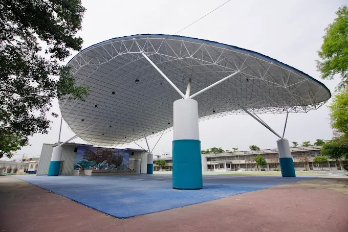
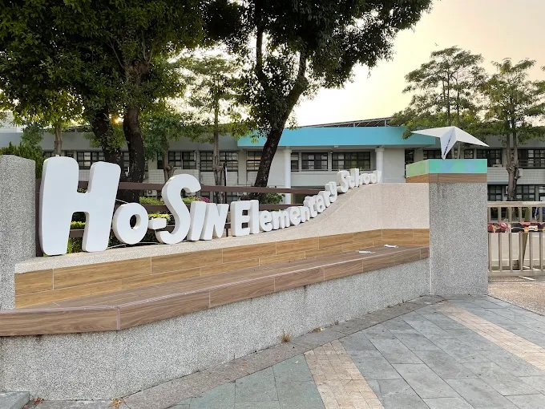
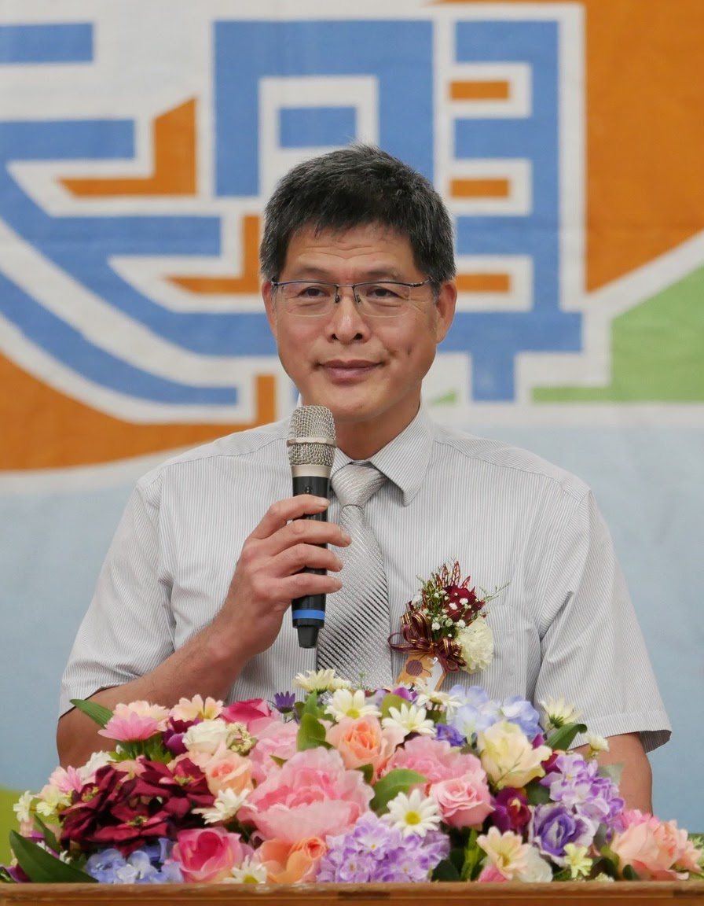
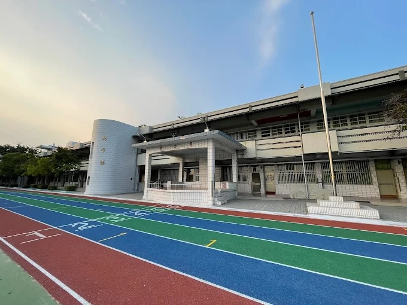
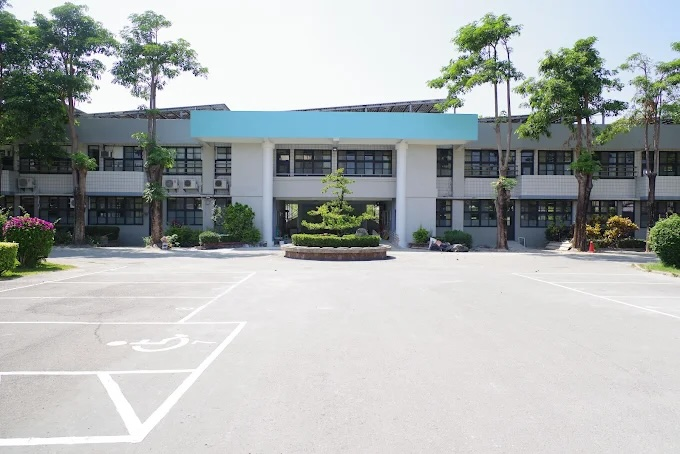

Where ecology meets bilingual education 生態校園，雙語學習，從合興出發


Hosin Elementary was established on April 1, 1917 — more than a century of education in the heart of Pitou Township. The school's name carries the spirit of the community: Hosin (合興), meaning "harmony and prosperity," echoes the name of Hosin Temple (合興宮), founded in 1743, around which this village grew.
Today, students learn in a campus alive with nature — an ecological pond, a native fish gallery, and a Sulcata Tortoise in the Tortoise Garden, which opened in October 2024 after two years of preparation.
合興國小創立於 1917 年（明治 50 年）4 月 1 日，超過百年深耕埤頭鄉合興村。校名取自村中古廟「合興宮」（清乾隆 8 年，1743 年創建）——「合」是和諧，「興」是興盛，是這塊土地的祝願。
今日的合興國小，學生在校園裡有生態池、原生魚廊，以及 2024 年 10 月啟用、由全校師生命名的「龜之家」——一隻來自非洲的蘇卡達陸龜靜靜地陪著孩子們長大。
A bilingual ecology campus where every subject connects to the living world around it.
The school campus doubles as a living laboratory. The Ecological Pond hosts native aquatic plants and fish; the Native Fish Gallery lets students observe Taiwan's freshwater species up close; and the Tortoise Garden cares for a Sulcata Tortoise — the world's third-largest land tortoise — named by student vote.
校園即是教室——水生池、原生魚廊、龜之家，讓台灣原生生態成為每一堂課的活教材。獨角仙復育計畫、落葉堆肥，生態從課本走向了土地。
Two Foreign English Teachers (FETs) — Karla Roflo and Amandeep Kaur — teach alongside Taiwanese homeroom teachers, connecting English to real campus moments. In parallel, students code in Scratch, design in Tinkercad 3D, and explore science through water rockets and RGB LED programming.
兩位外師（菲律賓籍 Karla、印度籍 Amandeep）駐校合教，雙語學習融入日常。與此同時，Scratch 程式、3D 列印、水火箭、RGB LED 等 STEM 課程讓孩子動手探索科技。
Hosin's track and field team is one of Changhua's strongest, capturing the county's top title in girls' athletics and finishing in the national top twelve. On the cultural side, students study Taiwanese Mother Tongue, create bilingual picture books in Holo, and visit the 300-year-old Hosin Temple to learn about the Bomb Mazu tradition.
田徑隊是全縣頂尖強隊，女童組全縣第一、全國前十二。文化面，臺語繪本製作、母語演講、合興宮媽祖文化巡禮，讓孩子扎根土地。

"Education is nothing other than love and example." — Froebel · 福祿貝爾

Word of the Day videos, co-teaching with FETs, Classroom English in every corridor — English is woven into the daily rhythm at Hosin.
每日一字短片、外師合班教學、課室英語廣播，英文融入合興每一天的節奏。

Students at Hosin connect with partner schools in India — sharing their campus, culture, and aspirations in English with young learners on the other side of the world.
透過外師 Karla 與 Amandeep 的牽線，合興學生與印度姐妹校線上交流，用英文分享台灣的校園故事。
Two teachers from opposite ends of the world, sharing one campus in Pitou Township.
Karla holds a Liberal Arts degree from San Jose Recoletos University and has taught English across the Philippines, Japan, and Taiwan. At Hosin, she bridges cultures through bilingual lessons, international exchanges with partner schools in India, and her belief that "language is the bridge between cultures."
Amandeep began her teaching journey as a volunteer in a rural village school in Rajasthan before finding her way to Taiwan. At Hosin, she runs English clubs and co-teaches across subjects with a philosophy rooted in empathy: "Learning happens when students feel safe, respected, seen, and heard."
Hosin Elementary is located in Pitou Township, Changhua County, surrounded by the farmlands and villages that have shaped this community for generations.
合興國小位於彰化縣埤頭鄉，四周是陪伴這座村庄一代又一代的農田與廟宇。歡迎來到合興，親身感受這座生態校園的氣息。